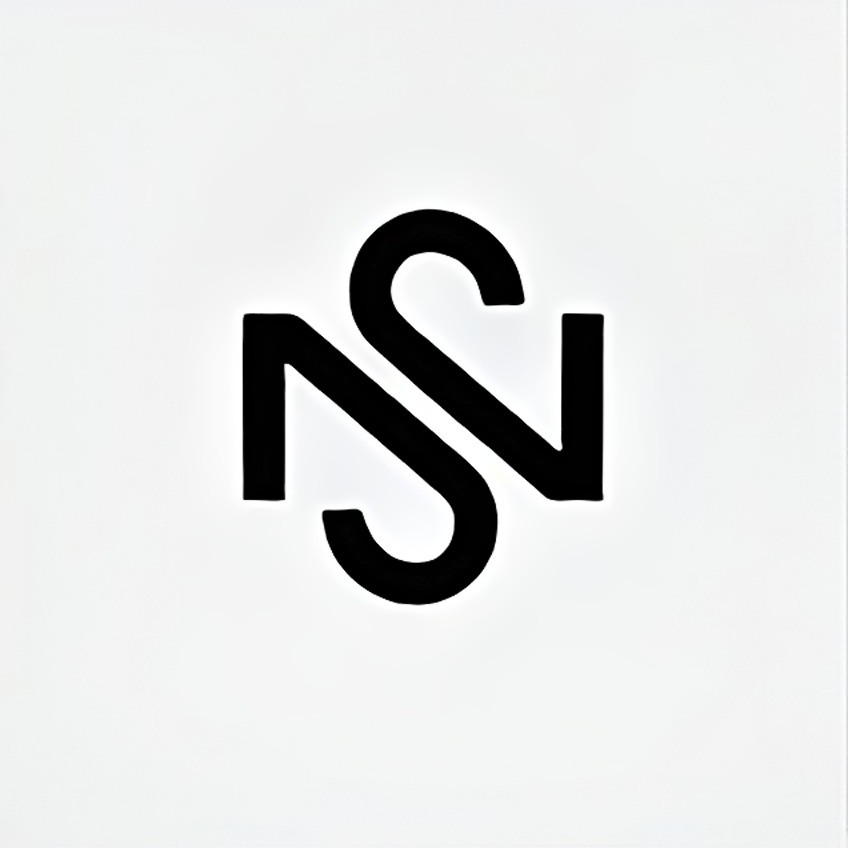

.أنت هنا، على أعتاب موقعي هذا موقعٌ مُتَحَلِّي بِحُلَّةٍ من الغموضِ مُحَمَّلٌ بِكَنْزٍ من الكلماتِ، نادِرَةٍ وعَسِيرَةِ الفَهْمِ كأنها لغةُ الأرواحِ، تتحدثُ بلسانِ الغيبِ لأنورَ دُرُوبَكُمْ، وأكشفَ سُتُورَ المُخْتَبَئِ فأنا هوَ، بن سلة أيمن مُنْتَقَى الأرواحِ،أفتحُ أبوابَ موقعي هذا لأشاركَكُمْ رحلةً في داخلي رحلةً مُثْرِيَةً بالمعرفةِ، وفائِضَةً بالإبداعِ فمنْ أرادَ الغوصَ في مَهَامِهِ، فليدخلْ ومنْ أرادَ التعلمَ والاستفادةَ، فليتوقفْ هنا، أنتمْ مُرْحَّبٌ بكمْ، في موقعي هذا موقعُ المتواضع موقعُ تعريفي الشخصي ، أنتمْ مُرْحَّبٌ بكمْ فتفضلوا، وادخلوا ولتبدأْ رحلةُ الاستكشافِ ولتتفتحْ أفكارُكُمْ ولتَرْتَقِي أرواحُكُمْ وأنتمْ، أنتمْ أصدقاؤي، وأحباؤي ومتابِعي، وقُرَّائي مرحبًا بكمْ وادخلوا ولتبدأْ رحلةُ الاستكشافِ ولتتفتحْ أفكارُكُمْ ولتَرْتَقِي أرواحُكُمْ و بدون أطالة و ضياع الوقت

About Me:
أنا شخصٌ مُحبٌ للحياةِ بكلّ ما فيها من تناقضاتٍ وجمالٍ وتحدياتٍ. أتمتعُ بشخصيةٍ مُفعمةٍ بالنشاطِ والتفاؤلِ، وأؤمنُ بأنّ الحياةَ رحلةٌ مُذهلةٌ مليئةٌ بالفرصِ التي يجبُ اغتنامُها.أستمتعُ بقضاءِ وقتي مع عائلتي وأصدقائي، فوجودُهم يُضفي على حياتي دفئًا وحبًا لا يُوصف. كما أحرصُ على مُمارسةِ الهواياتِ التي تُحبّبها نفسي، مثلَ القراءةِ والكتابةِ والرياضةِ، فهي تُساعدني على الاسترخاءِ والشعورِ بالسعادةِ.أُحبّ التعلّمَ واكتشافَ أشياءَ جديدةٍ، وأُؤمنُ بأنّ المعرفةَ هي أقوى سلاحٍ في الحياةِ. أُسعى دائمًا لتوسيعِ آفاقي واكتسابِ مهاراتٍ جديدةٍ تُساعدني على تحقيقِ أهدافي.أُؤمنُ بأنّ الحياةَ مليئةٌ بالخيرِ والجمالِ، وأنّ كلّ تحدٍّ هو فرصةٌ للنموّ والتطورِ. أواجهُ صعوباتِ الحياةِ بروحٍ إيجابيةٍ وتفاؤلٍ لا ينضبُ، وأُحاولُ دائمًا إيجادَ حلولٍ إبداعيةٍ للتغلبِ على العقباتِ.أُدركُ أنّ الحياةَ ليستْ رحلةً فرديةً، وأنّنا جميعًا نُشاركُ في صنعِ مستقبلٍ أفضلَ. أُحاولُ دائمًا أنْ أكونَ شخصًا مُفيدًا لمجتمعي، وأنْ أتركَ أثرًا إيجابيًا على حياةِ الآخرين.لا زلتُ أتعلمُ وأنموّ كلّ يومٍ، وأسعى دائمًا لتحقيقِ أهدافي وطموحاتي. أُؤمنُ بأنّ الحياةَ رحلةٌ مُستمرةٌ، وأنّ أفضلَ ما في الأمرِ هو أنّنا نملكُ القدرةَ على تشكيلِ هذهِ الرحلةِ كما نريدُ.
My hobies:
عالمي مليء بالنشاط والتشويق! أنا أُغذّي فضولي وإبداعي باستمرار من خلال مجموعة مُتنوعة من الهوايات. من ناحية، أنا شغوف بتطوير الأشياء مثل تطوير المواقع، سواء كان ذلك بناء شيء عملي أو العبث بالاكواد لإحياء فكرة ما. من ناحية أخرى، أجدُ السلامَ والإلهامَ الكبيرين من خلال التقاطِ صُورٍ للعالمِ بعدسةِ الكاميرا. هناك سحرٌ خاصٌ في التصوير الفوتوغرافي، فهو طريقةٌ لتجميدِ لحظةٍ في الزمن وإظهارِ جمالها الفريد. ولكن تعطشي للمعرفة لا يتوقفُ عند هذا الحدّ. أنا أعشقُ الغوصَ في كتابٍ جيّد، والسماحُ للكلماتِ بأن تنقلني إلى عوالمَ جديدةٍ وتوسيعُ مداركي. بالإضافة إلى ذلك، لديّ عشقٌ خاصٌ بالسيارات. هناك شيءٌ مُرضٍ للغاية في فهمِ كيفية عملِ هذه الآلات، وحتى في تلويث يديّ بإصلاحها. قد تبدو هذه الهواياتُ مُتفرّقةً، ولكن بالنسبة لي، فهي جميعًا تمثلُ طرقًا مختلفةً للاستكشافِ والإبداعِ والتعلم!